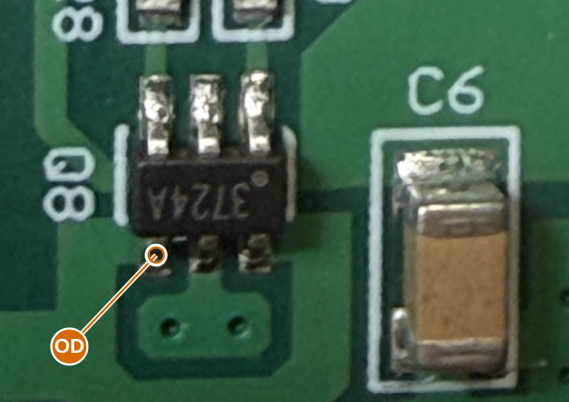

All remaining issues | Schematic | Completed investigation
RF wiring correction recorded; scope checks deferred
v0.9.40 · In-circuit batch completed; no active measurement form
Battery and programmer DISCONNECTED; antenna wires still fitted. Select RESISTANCE (ohms).
B82 recorded. No repeat requested; all components stay fitted and scope work is deferred.
B82 red probe: Q8 joined output node

- OD: Q8 LOWER-LEFT outer contact in this photo, native pin4/candidate P drain. It is joined to the opposite outer drain; do NOT use the centre ground contact.
| ID | Red probe | Black probe | Condition | Reading |
|---|
| B82 | OD | A | Unpowered; antenna wires fitted | 4.5 ohm |
B82 black probe: ANT1 solder terminal

- A: ANT1 solder terminal, next to the printed ANT1 label.
Other probe location for the same reading above; no additional test.
B82 OD-ANT1 = 4.5 ohm. Alone this cannot distinguish contact resistance from a path through the fitted approximately 5-ohm antenna. IMG_2431 shows the joined outer Q8 pads; board_upper.png shows that output copper continuing around Q8 toward ANT1. The direct output-to-ANT1 route is accepted as photo-supported with a compatible low-resistance reading, not proved by resistance magnitude alone. R5 is not in this output path.
No new readings requested here. Recorded result and interpretation.
What follows
- Resolve hidden paths and device behavior - RF feed/output wiring, switch contacts and front-bank ANT2 routing are supported. Two local-only PIC branches and candidate roles remain qualified. Scope work and component isolation are deferred by owner.
- Recover critical component values - 44 ceramic values; prioritize tuning and receiver after topology.
- Finish interface and package mapping - LED colour branches and J5 board-contact/output mapping are established. LED footprint, connector fit and external motor harness orientation remain reproduction qualifications.
ERC: 1 retained U6/U6A output conflict. U6A is DNP; its regulator symbol remains by your request. Other source and library findings are resolved.